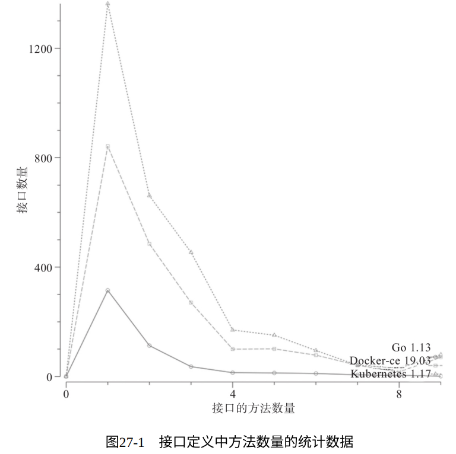
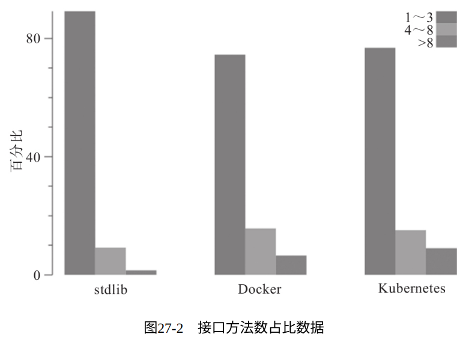
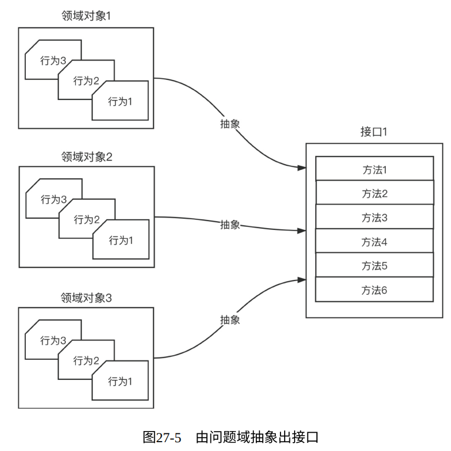
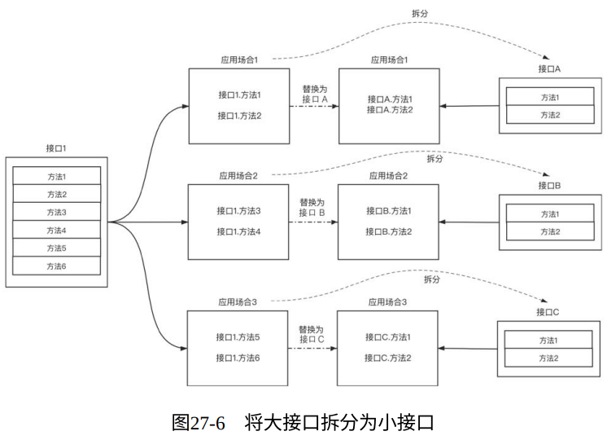

接口越大，抽象程度越低。
——Rob Pike，Go语言之父
1. Go推荐定义小接口
接口就是将对象的行为进行抽象而形成的契约。
契约有繁有简， Go选择了去繁就简，这主要体现在以下两点上：
- 契约的自动遵守：Go语言中接口与其实现者之间的关系是隐式的，实现者仅需实现接口方法集中的全部方法，便自动遵守了契约，实现了该接口。
- 小契约：契约繁了便束缚了手脚，降低了灵活性，抑制了表现力。
下图示对Go标准项目（Go 1.13版本）、Docker项目（Docker 19.03版本）、Kubernetes项目（Kubernetes 1.17版本）中所定义接口的方法数的统计图，以及接口方法数量占比的柱状图：


2. 小接口的优势
- 接口越小，抽象程度越高，被接纳度越高
- 易于实现和测试
- 契约职责单一，易于复用组合
3. 定义小接口可以遵循的一些点
- 抽象出接口：初期不要在意接口大小
- 将大接口拆分成小接口：一段时间后，我们就会发现大接口会呈现出一种按业务逻辑自然分组的状态，便可以进行拆分
- 接口的单一契约职责

